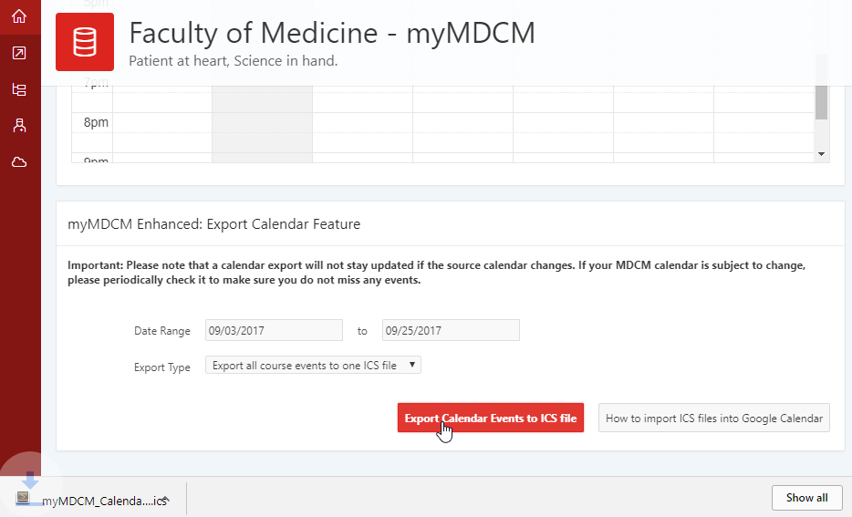

myMDCM Enhanced Features
myMDCM Calendar Export
Export the events from your myMDCM calendar to an ICS file that can be imported into other calendar apps. Select a date range (events from the start date to the end date inclusively will be exported) and chose whether to export all course events to a single file or to export a separate file for each course.
Importing ICS files into Google Calendar
Import a single ICS file
If you chose the "Export all course events to one ICS file" export type option then myMDCM enhanced will download a single .ICS file containing the exported events.
To import the file into Google Calendar, select import calendar under the Other calendars menu, then choose the .ICS file exported from myMDCM and choose the calendar you wish to import it into then click Import.
Import multiple ICS files
If you chose the "Export separate ICS file for each course" export type option then myMDCM enhanced will download a separate .ICS file for each course with events from your calendar.
This will allow you to have a separate color for each of your courses in Google Calendar.
To accomplish this, first create a separate calendar in Google Calendar for each of your courses (one for each of the .ICS files that was exported). Each calendar can then have a different color selected. Following the steps above for importing an .ICS file, import each of your .ICS files to a separate calendar.
Extension Menu
McGill Quick Links
Click on the myMDCM Enhanced icon in the chrome menu bar to access the extension menu and various McGill quick links such as myMDCM, McGill email, Minerva, one45, myMed, etc.
Other Resources
In addition to the McGill quick links, you can also access other useful resources from the myMDCM Enhanced menu.